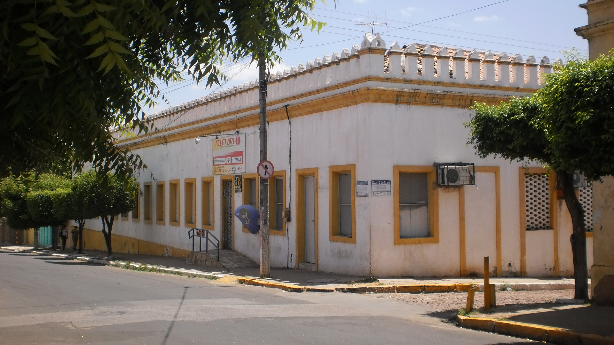
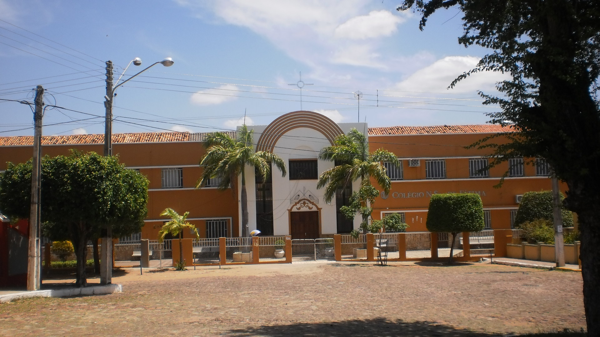

Fotos e Sua Localização



O #
A história educacional de Barbalha reflete um rico legado cultural e acadêmico. Desde 1889, com o Gabinete de Leitura, a cidade demonstrava compromisso com a educação, especialmente para os mais pobres, formando cearenses de renome. Esse legado se fortaleceu com a fundação do Colégio Leão XII em 1903, idealizado por Manoel Soriano de Albuquerque, que também criou o Colégio Coração de Maria, destinado à formação de moças, consolidando a estrutura educacional da época. Em continuidade a esse espírito educacional, o Casarão Hotel, construído em 1859 com mão-de-obra escrava, com 850 metros quadrados de área e tombado como patrimônio histórico em 1983, tornou-se sede da Escola de Artes Reitora Violeta Arraes de Alencar Gervaiseau em 2008. Vinculada à URCA, a escola contribuiu significativamente para o cenário cultural de Barbalha até 2011, quando foi transferida para Juazeiro do Norte. A mudança gerou resistência de moradores e jornalistas locais, que consideravam a escola um verdadeiro patrimônio cultural da cidade. O prédio, inspirado nos sobrados de Recife, permanece como símbolo da história e da educação barbalhense.
O #